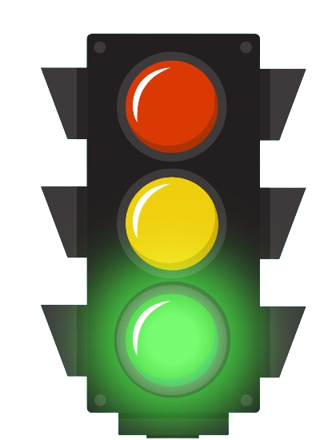
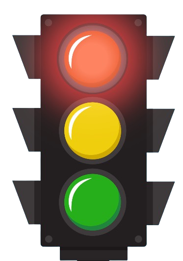

Trascina gli alimenti nel rettangolo corretto! 🎮
Impara cosa mangiare durante la merenda!
🔴 Rosso → Alimenti da evitare
🟡 Giallo → Con moderazione
🟢 Verde → Sempre consigliati
🖱️ Trascina ogni alimento nel rettangolo giusto!
⚠️ Attenzione: hai solo 3 errori a disposizione!


Hai sbagliato 3 volte… riprova! 💪